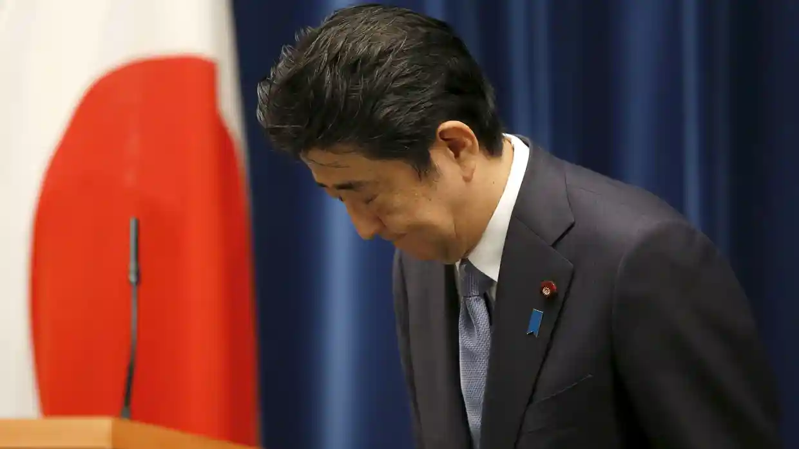

Future generations should not be obliged to apologise for wartime actions, says Abe in address expected
to draw criticism from China and South Korea.
Japan's prime minister says new generations don't need to keep apologizing for a war that once took
place.
Japan's prime minister, Shinzo Abe, has expressed “deepest remorse” and “sincere condolences” to
Japan's wartime victims, but risked angering the country's neighbours by stopping short of issuing a fresh
apology and by saying that future generations should not be “predestined” to apologise
themselves.
In a televised address a day before Japan marks 70 years since its defeat on 15 August 1945, Abe
expressed “profound grief” for all who died in the second world war.
History is harsh. What is done cannot be undone Shinzo Abe
Abe, a conservative who had hinted he would not repeat previous official apologies, said that Japan
had "repeatedly expressed the feelings of deep remorse and heartfelt apology for its actions during the
war".
"In order to manifest such feelings through concrete actions,” he said, “we have engraved in our
hearts the histories of suffering of the people in Asia as our neighbours."
But he added: "We must not let our children, grandchildren, and even further generations to come, who
have nothing to do with the war, be predestined to apologise. Even so, we Japanese, across generations,
must squarely face history. We have a responsibility to inherit the past, in all humbleness, and pass it
on to the future."

Shinzo Abe bows to the proclamation marking the 70th anniversary of the end of the second world
war.
Abe's departure from the landmark 1995 statement by the then prime minister, Tomiichi Murayama, in
which he issued a “heartfelt apology” for Japan's "aggression" and "colonial rule" on the Asian mainland,
quickly drew criticism from China.
In a commentary, China's state-run news agency Xinhua accused Abe of performing "linguistic tricks" in
his attempts to avoid further damaging Japan's relationship with Beijing while appeasing his conservative
support base.
"Instead of offering an unambiguous apology, Abe's statement is rife with rhetorical twists like
'maintain our position of apology' - dead giveaways of his deep-rooted historical revisionism, which has
haunted Japan's neighbourhood relations" it's said
"By adding that it is unnecessary for Japan's future generations to keep apologising, Abe seemed to
say that his once-for-all apology can close the page of history. However, those countries which suffered
from Japan's aggression would never forget that dark period of history, as Japanese would always remember
the horrific scenes of A-bombed Hiroshima and Nagasaki."
South Korea's Yonhap news agency noted that Abe had “made no new apology … falling short of South
Korea's expectations”. It added that government officials were "scrutinising" the wording of Abe's
statement.
As former victims of Japanese militarism in the first half of the 20th century, both countries had
made clear that they expected Abe to repeat the key phrases of the Murayama statement, or issue a
similarly unequivocal apology of his own.
"In the landmark 1995 statement, then prime minister Tomiichi Murayama voiced 'feelings of deep
remorse' and offered a 'heartfelt apology' for Japan's past 'aggression' and 'colonial rule',” Yonhap
said. “A decade later, Junichiro Koizumi, who was Japan's leader, repeated the key words. South Korea
wanted Abe to follow in Koizumi's footsteps."
Abe did, however, refer to Japan's past “aggression”, promising that the country would “never again
resort to any form of threat or use of force as a means of settling international
disputes”.